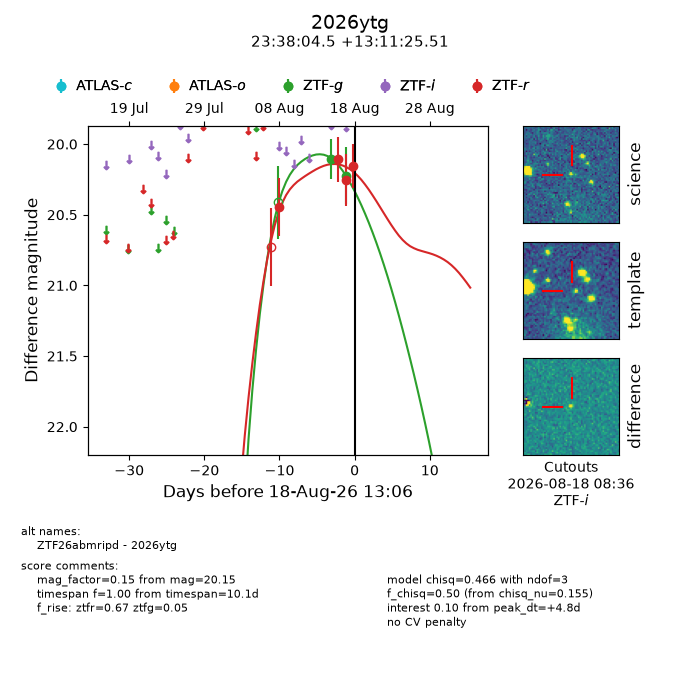
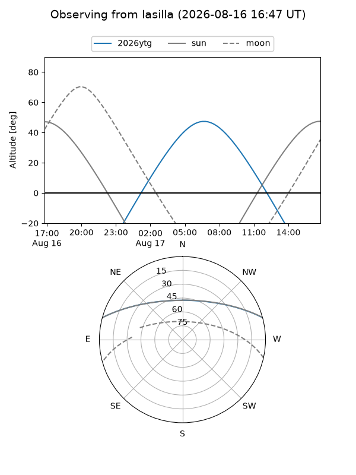
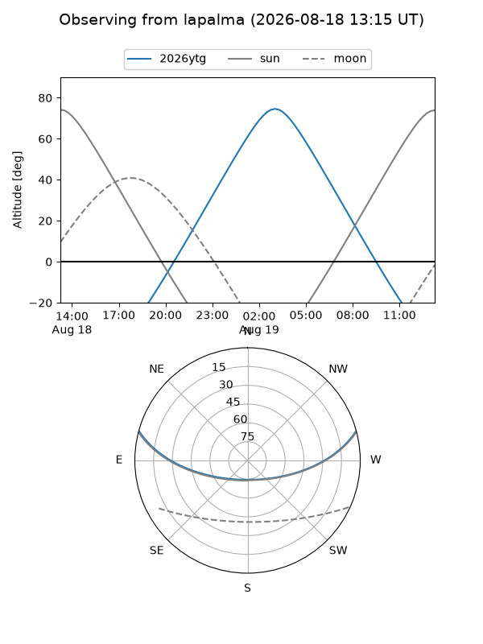
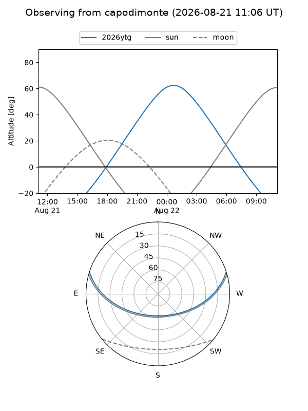
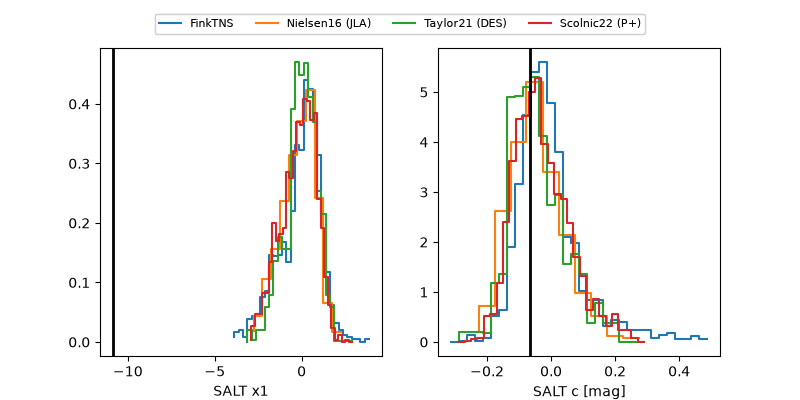

2026ytg
Target 2026ytg at 2026-08-18 13:10
Aliases and brokers:
FINK-ZTF: ztf.fink-portal.org/ZTF26abmripd
Lasair-ZTF: lasair-ztf.lsst.ac.uk/objects/ZTF26abmripd
ALeRCE-ZTF: alerce.online/object/ZTF26abmripd
YSE-PZ: ziggy.ucolick.org/yse/transient_detail/2026ytg
TNS name: wis-tns.org/object/2026ytg
Direct TNS query: direct search
alt names
ZTF26abmripd (ztf,fink_ztf)
2026ytg (tns,yse)
Coordinates:
equatorial (ra, dec) = 354.5186,+13.19042
equatorial (HMS+DMS) = 23:38:04.45,+13:11:25.51
galactic (l, b) = (96.7997,-45.92581)
Flags:
TNS type: nan
peak dt: +4.8
Photometry:
last ztfg=20.22, ztfr=20.15
2 ztfg, 4 ztfr detections
Lightcurve

Visibility



Additional plots
